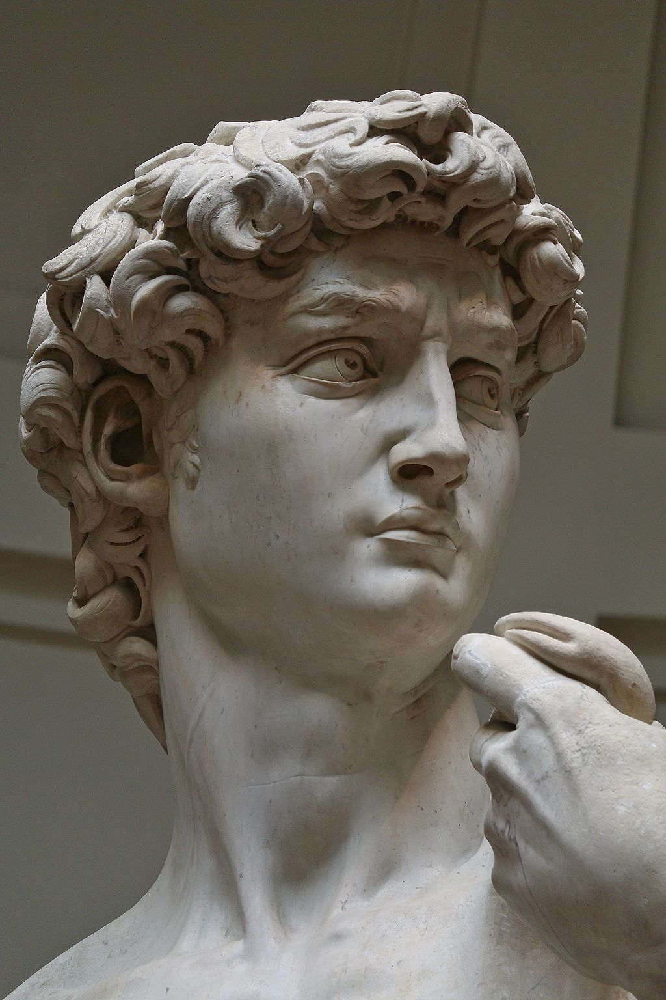

<head>
<meta charset="UTF-8" />
<meta name="keywords" content="drawing, painting" />
<meta name="description" content="drawings by Sunjy" />
<title>Sunjy</title>
<link rel="shortcut icon" type="image/x-icon" href="../../mImages/mCommon/favicon.ico" media="screen" />
<link rel="stylesheet" type="text/css" href="../../mCsses/mCommon/mCssA.css" />
<link rel="stylesheet" type="text/css" href="../../mCsses/mCommon/mCssB.css" />
<link rel="stylesheet" type="text/css" href="../../mCsses/mCommon/mCssC.css" />
<link rel="stylesheet" type="text/css" href="../../mCsses/mCommon/mCssD.css" />
<link rel="stylesheet" type="text/css" href="../../mCsses/mContent/mCssA.css" />
<link rel="stylesheet" type="text/css" href="../../mCsses/mContent/mCssB.css" />
<link rel="stylesheet" type="text/css" href="../../mCsses/mContent/mCssC.css" />
<link rel="stylesheet" type="text/css" href="../../mCsses/mContent/mCssD.css" />
</head>
<script type="text/javascript" src="../../mScripts/mContent/mContentAA.js" /></script>
<script type="text/javascript" src="../../mScripts/mContent/mContentAB.js" /></script>
<script type="text/javascript" src="../../mScripts/mContent/mContentAC.js" /></script>
<script type="text/javascript" src="../../mScripts/mContent/mContentAD.js" /></script>
<script type="text/javascript"></script> 
<script type="text/javascript">
document.write('<div class="mImgAbsolute"></div>');
/*
document.write('<p class="mFontSizeBColor" />From a white paper...</p>');
document.write('<table class="center"><tr><td>');
document.write('');
document.write('</td></tr></table>');
*/
</script>


<script type="text/javascript">
document.write('<p class="mFontSizeBColor" />David</p>');
document.write('<p class="mFontSizeSColor" />“David” by Michelangelo was completed in 1504 and depicts the Biblical hero David, who killed the giant Goliath with a rock from his sling.<br><br>David is represented just before his battle with Goliath, tense and ready for combat, Michelangelo has captured the moment between decision and action, during the war between Israel and the Philistines.<br><br>David’s brow is focused, his neck tense, his veins are bulge out, he holds a sling draped over his shoulder in his left hand, and he holds a rock in his right hand.<br><br>The twist of his body conveys motion and is achieved with the contrapposto technique developed by the Greeks for their standing heroic male nude.<br><br>The figure stands with one leg holding its full weight and the other leg forward. Michelangelo has emphasized the contrapposto technique by the turn of the head to the left, and by the contrasting positions of the arms.<br><br>David was initially commissioned as one of a series of statues of the prophets to be positioned along the roofline of the east end of Florence Cathedral.<br><br>However, due to the more than six-ton weight of the “David,” it could not be placed on the roof of the cathedral. David was a favored subject in the art of Florence.<br><br>So Michelangelo’s statue was placed instead in a public square, outside the Palazzo Vecchio, which was the seat of Civic Government in Florence.<br><br>David, the giant-killer, had long been seen as a political symbol in Florence. The statue came to symbolize the civil liberties embodied in the Republic of Florence, an independent city-state that had powerful rivals.<br><br>The eyes of the “David,” which had a steady glare, were turned towards Rome.<br><br>In 1873, the statue of David was removed from the Piazza, to protect it from damage. It is displayed in the Accademia Gallery, and a replica was placed in the Piazza in 1910.<br><br>Michelangelo<br><br>Michelangelo was an Italian sculptor, painter, architect, and poet of the Renaissance who was born in Florence, and who had a significant influence on the development of Western art.<br><br>Michelangelo is one of the greatest artists of all time. He is considered as a contender for the title of the leading representative of Renaissance man, along with his rival, Leonardo da Vinci.<br><br>Five years before the debut of the “David,” Michelangelo’s Pieta had already made him famous, but the “David” defined the 29-year-old artist as a master sculptor of the High Renaissance.<br><br>Four years later, in 1508, Michelangelo began work on his greatest painting achievement in the Sistine Chapel.<br></p>');
document.write('<table class="center" /><tr><td>');
document.write('<br>David is represented just before his battle with Goliath, tense and ready for combat, Michelangelo has captured the moment between decision and action, during the war between Israel and the Philistines.<br><br>David’s brow is focused, his neck tense, his veins are bulge out, he holds a sling draped over his shoulder in his left hand, and he holds a rock in his right hand.<br><br>The twist of his body conveys motion and is achieved with the contrapposto technique developed by the Greeks for their standing heroic male nude.<br><br>The figure stands with one leg holding its full weight and the other leg forward. Michelangelo has emphasized the contrapposto technique by the turn of the head to the left, and by the contrasting positions of the arms.<br><br>David was initially commissioned as one of a series of statues of the prophets to be positioned along the roofline of the east end of Florence Cathedral.<br><br>However, due to the more than six-ton weight of the “David,” it could not be placed on the roof of the cathedral. David was a favored subject in the art of Florence.<br><br>So Michelangelo’s statue was placed instead in a public square, outside the Palazzo Vecchio, which was the seat of Civic Government in Florence.<br><br>David, the giant-killer, had long been seen as a political symbol in Florence. The statue came to symbolize the civil liberties embodied in the Republic of Florence, an independent city-state that had powerful rivals.<br><br>The eyes of the “David,” which had a steady glare, were turned towards Rome.<br><br>In 1873, the statue of David was removed from the Piazza, to protect it from damage. It is displayed in the Accademia Gallery, and a replica was placed in the Piazza in 1910.<br><br>Michelangelo<br><br>Michelangelo was an Italian sculptor, painter, architect, and poet of the Renaissance who was born in Florence, and who had a significant influence on the development of Western art.<br><br>Michelangelo is one of the greatest artists of all time. He is considered as a contender for the title of the leading representative of Renaissance man, along with his rival, Leonardo da Vinci.<br><br>Five years before the debut of the “David,” Michelangelo’s Pieta had already made him famous, but the “David” defined the 29-year-old artist as a master sculptor of the High Renaissance.<br><br>Four years later, in 1508, Michelangelo began work on his greatest painting achievement in the Sistine Chapel.<br>" />');
document.write('</td></tr></table>');
</script>


